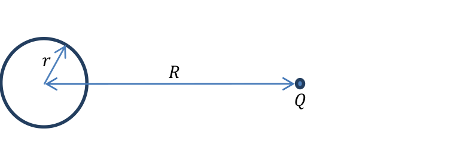
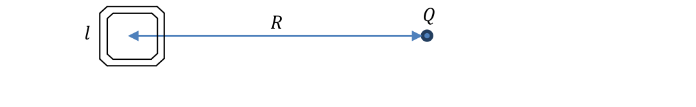
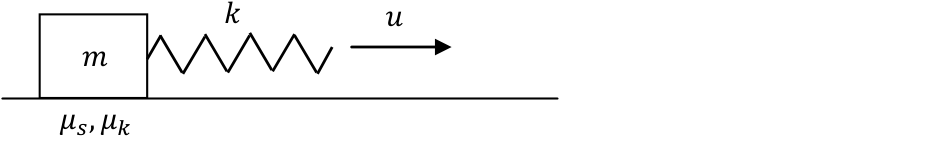
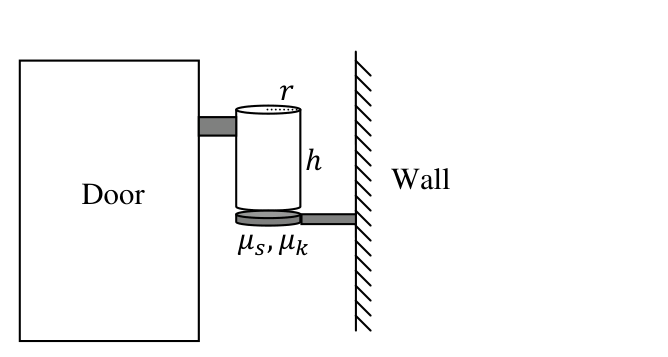
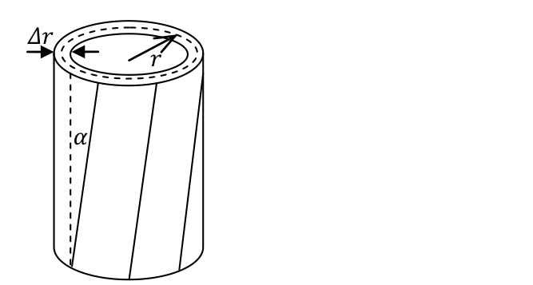
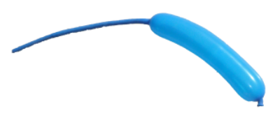
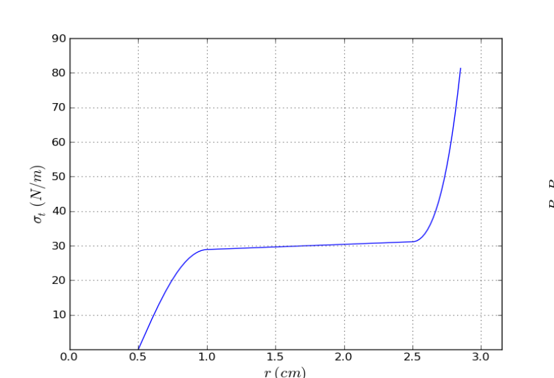
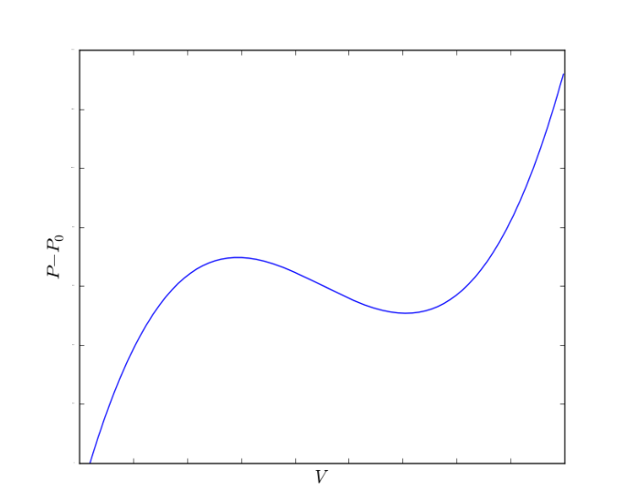

The Shockley-James Paradox
In the year 1905, Albert Einstein proposed the special theory of relativity to resolve the inconsistency between Newton’s mechanics and Maxwell’s electromagnetism. Proper understanding of the theory led to the resolution of many apparent paradoxes. At the time, the discussion focused mostly on the propagation of electromagnetic waves.
In this question, we solve a paradox of a different type. For a fairly simple system of charges proposed by W. Shockley and R. P. James in 1967, understanding the conservation of linear momentum requires careful relativistic analysis. If a point charge is located near a magnet of changing magnetization, there’s an induced electric force on the charge, but no apparent reaction on the magnet. The process may be slow enough that any electromagnetic radiation (and any momentum carried away by it) is negligible. Thus, apparently we get a cannon without recoil.
In our analysis of this system, we will demonstrate that in relativistic mechanics, a composite body may hold a non-zero mechanical momentum while remaining stationary.
Part I: Understanding the impulse on the point charge (3.3 points)
Consider a circular current loop of radius carrying a current , and a second, larger current loop of radius , concentric with the first and lying in the same plane.
a. (1 pt.) A current passing through loop 2 (the larger loop) generates a magnetic flux through loop 1. Find the ratio . It is called the mutual inductance coefficient.
b. (0.8 pts.) Given that , obtain the total induced EMF in the larger loop as a result of a variation of the current in the smaller loop. Neglect the current in the larger loop. Hint: the induced EMF is equal to the rate of change of the magnetic flux through the loop.
c. (0.5 pts.) The EMF you found in part (b) is due to the tangential component of an induced electric field. Obtain an expression for the tangential electric field at radius as a function of the rate of change of the current.

Figure 1: A circular current loop and a point charge .We now remove the larger current loop, and instead put a massive point charge at radius , as shown in Figure 1. It may be assumed that the charge moves very little during the relevant time periods.
d. (1 pt.) Find the total tangential impulse received by the point charge as the current in the small loop changes from an initial value to the final value .
Part II: Understanding the recoil of the current loop (4.4 points)
We will now understand the origin of the recoil of the loop, using a loop of different geometry.
e. (1.1 pts.) Consider a hollow tube with walls made of a neutral insulating material of length and cross section carrying an electric current . The current is due to charged particles of rest mass and charge distributed homogenously inside the tube with number density . Assume that the charged particles are all moving along the tube with the same velocity. Find the total momentum of the charged particles in the tube, taking Special Relativity effects into account.
f. (3.3 pts.) Consider a square current loop with side . At a distance from the loop, there is a point charge ; see Figure 2. The loop carries current . We will model the current loop as a neutral tube, as in part (e). The charge carriers can move freely along the loop, colliding elastically with the walls and making elastic right turns at the corners. Neglect all interactions among the charge carriers. Assume also that all the charge carriers at a given section along the tube always move with the same velocity. Assume that the loop is heavy and that its motion can be neglected. Calculate the total linear momentum of the charge carriers in the loop. It is called “hidden momentum”.

Figure 2: A square current loop and a point charge .When the current stops, this linear momentum is transferred to the loop, and it gets an impulse equal to minus the impulse received by the point charge . This is the missing recoil that we were looking for (note that in the initial state there is also momentum in the electromagnetic field; this is important for conservation of the total momentum of the entire system).
Part III: Summarizing the results (2.3 points)
g. (0.8 pts.) Current loops are often characterized by their magnetic moment , where is the current and is the loop’s area. Express the answer to part (d) in terms of , , and . Likewise, express the answer to part (f) in terms of , , and . Note that the electric and magnetic constants are related by:
where is the speed of light.
h. (1.5 pts.) In a more realistic model, the current loop is a conducting wire, and the field of the point charge does not penetrate into the conductor. We assume that the current is still conducted by charge carriers inside the wire. Decide whether each of the following statements is true or false, and circle the correct option in the Answer Form. Note: You may leave a statement undecided, but if you decide incorrectly, you will not get credit at all for part (h).
A. (0.5 pts.) The linear momentum of the current loop is zero.
B. (0.5 pts.) As the total current in the loop changes from to zero, the charge carriers decelerate, causing induced currents in the wire’s conducting material. Because of these induced currents, the point charge will not get a net impulse.
C. (0.5 pts.) The surface charges on the wire, induced by the presence of the external charge, will experience an electric force as the current changes from to zero. This way, the loop will get the same impulse as found in part (f).
Fonte: Testo (PDF) — p.1
Topic: Special Relativity, Electromagnetic Induction, Magnetism Metodi: Relativistic Energy-Momentum, Faraday’s Law of Induction, Impulse-Momentum Theorem, Symmetry Argument Competenze: Physical Reasoning, Mathematical Modeling Objects: Coil, Point Charge, Magnet
Il Paradosso Shockley-James
Nell’anno 1905, Albert Einstein propose la teoria speciale della relatività per risolvere l’incoerenza tra la meccanica di Newton e l’elettromagnetismo di Maxwell. Una corretta comprensione della teoria ha portato alla risoluzione di molti apparenti paradossi. All’epoca, la discussione si concentrava principalmente sulla propagazione delle onde elettromagnetiche.
In questa domanda, risolviamo un paradosso di un altro tipo. Per un sistema di tariffe piuttosto semplice proposto da W. Shockley e R. P. James nel 1967, per capire la conservazione dell’impulso lineare è necessaria una attenta analisi relativistica. Se una carica puntaria si trova vicino a un magnete di mutazione di magnetizzazione, c’è una forza elettrica indotta sulla carica, ma nessuna apparente reazione sul magnete. Il processo può essere abbastanza lento da rendersi trascurabile qualsiasi radiazione elettromagnetica (e qualsiasi impulso che essa trasporta). Quindi, a quanto pare, abbiamo un cannone senza ritiro.
Nella nostra analisi di questo sistema, dimostreremo che nella meccanica relativistica, un corpo composto può mantenere un impulso meccanico non zero mentre rimane fermo.
Parte I: Comprendere l’impulso sulla carica di punto (3,3 punti)
Considerate un ciclo di corrente circolare di raggio con corrente e un secondo ciclo di corrente più grande di raggio , concentrico con il primo e situato nello stesso piano.
a. (1 pt.) Una corrente che passa attraverso il ciclo 2 (il ciclo più grande) genera un flusso magnetico attraverso il ciclo 1. Trova il rapporto . Si chiama coefficiente di induzione reciproca.
**b. (0,8 pts.) ** Dato che , ottenere la FEM totale indotta nel ciclo più grande a seguito di una variazione della corrente nel ciclo più piccolo. Lascia perdere la corrente nel circuito più grande. Signal: la FEM indotta è uguale al tasso di variazione del flusso magnetico attraverso il ciclo.
**c. (0,5 pts.) ** La FEM che hai trovato nella parte (b) è dovuta alla componente tangenziale di un campo elettrico indotto. Ottenere un’espressione per il campo elettrico tangenziale al raggio come funzione del tasso di variazione della corrente.
Figura 1: Un circuito di corrente circolare e una carica di punto .
Ora rimuoviamo il circuito corrente più grande, e invece mettiamo una carica di punto massiccia al raggio , come mostrato nella Figura 1. Si può presumere che l’imposta si muova molto poco durante i periodi di tempo pertinenti.
d. (1 pt.) Trova l’impulso tangenziale totale ricevuto dalla carica di punto in quanto la corrente nel piccolo ciclo cambia da un valore iniziale al valore finale .
Parte II: Comprendere il retrocesso del circuito corrente (4.4 punti)
Ora capiremo l’origine del retrocesso del ciclo, utilizzando un ciclo di geometria diversa.
e. (1.1 pts.) Considera un tubo vuoto con pareti realizzate in materiale isolante neutro di lunghezza e sezione trasversale con corrente elettrica . La corrente è dovuta a particelle cariche di massa di riposo e carica distribuite in modo omogeneo all’interno del tubo con densità di numero . Supponiamo che le particelle cariche si muovano tutte lungo il tubo con la stessa velocità. Trova il momento totale delle particelle cariche nel tubo, tenendo conto degli effetti di Relatività Speciale.
**f. (3.3 punti) ** Considera un ciclo di corrente quadrato con lato . A una distanza dal ciclo, vi è una carica di punto ; vedere figura 2. Il circuito porta corrente . Modelleremo il circuito corrente come tubo neutro, come nella parte (e). I portatori di carica possono muoversi liberamente lungo il ciclo, collidendo elasticamente con le pareti e facendo elasticamente le curve a destra negli angoli. Ignorare tutte le interazioni tra i portatori di carica. Supponiamo anche che tutti i portatori di carica in una determinata sezione lungo il tubo si muovano sempre con la stessa velocità. Supponiamo che il circuito sia pesante e che il suo movimento possa essere trascurato. Calcolare il momento lineare totale dei portatori di carica nel circuito. Si chiama “momento nascosto”.
Figura 2: Un ciclo di corrente quadrato e una carica di punto .
Quando la corrente si ferma, questo momento lineare viene trasferito nel loop, e ottiene un impulso uguale a meno l’impulso ricevuto dalla carica di punto . Questo è il ritiro mancante che stavamo cercando (nota che nello stato iniziale c’è anche slancio nel campo elettromagnetico; questo è importante per la conservazione del slancio totale dell’intero sistema).
Parte III: Riassunto dei risultati (2,3 punti)
**g. (0.8 pts.) ** I circuiti di corrente sono spesso caratterizzati dal loro momento magnetico , dove è la corrente e è l’area del circuito. Esprimere la risposta alla parte d) in termini di , , e . Allo stesso modo, esprimere la risposta alla parte (f) in termini di , , e . Si noti che le costanti elettriche e magnetiche sono correlate da:
dove è la velocità della luce.
**h. (1.5 pts.) ** In un modello più realistico, il circuito corrente è un filo conduttore e il campo della carica puntaria non penetra nel conduttore. Supponiamo che la corrente sia ancora condotta da portatori di carica all’interno del filo. Decidi se ciascuno dei seguenti affermazioni è vero o falso e circolare l’opzione corretta nel modulo di risposta. Nota: Potete lasciare una dichiarazione indecisa, ma se decidete erroneamente, non riceverete alcun merito per la parte (h).
A. (0,5 punti) La dinamica lineare del loop corrente è zero.
B. (0,5 pts) Quando la corrente totale del circuito cambia da a zero, i portatori di carica rallentano, causando correnti indotte nel materiale conduttore del filo. A causa di queste correnti indotte, la carica puntologica non riceverà un impulso netto.
C. (0,5 pts) Le cariche superficiali sul filo, indotte dalla presenza della carica esterna, sperimenteranno una forza elettrica quando la corrente cambia da a zero. In questo modo, il ciclo otterrà lo stesso impulso che si trova nella parte (f).
Fonte: Testo (PDF) — p.1
Topic: Special Relativity, Electromagnetic Induction, Magnetism Metodi: Relativistic Energy-Momentum, Faraday’s Law of Induction, Impulse-Momentum Theorem, Symmetry Argument Competenze: Physical Reasoning, Mathematical Modeling Objects: Coil, Point Charge, Magnet
Creaking Door
The phenomenon of creaking is very common, and can be found in doors, closets, chalk squeaking on a blackboard, playing a violin, new shoes, car brakes and other systems from everyday life. Here in Israel, a similar phenomenon causes violent earthquakes with a period of several decades. These originate in the Dead Sea rift, located right above the deepest known break in the earth’s crust.
The physical mechanism for creaking is based on elasticity combined with the difference between the static and the kinetic friction coefficients. In this question, we will study this mechanism and its application to the case of an opening door.
Part I: General model (7.5 points)
Consider the following system (see Figure 1):
A box with mass is attached to a long ideal spring with spring constant , whose other end is driven at a constant velocity . The static and the kinetic friction coefficients between the box and the floor are given respectively by and , where .
We would like to understand why this setup supports two different forms of motion:
- The friction is always kinetic. This is known as a pure slip mode.
- Kinetic and static friction alternate. This is known as a stick-slip mode. Stick-slip motion is the source of the creaking sound commonly encountered.
a. (1 pt.) Consider the case where at the initial time , the box slides on the floor with velocity , and the spring’s tension exactly balances the kinetic friction. Assume . The spring’s elongation will oscillate as a function of .
a1. (0.6 points) Find the period and the amplitude of these oscillations.
a2. (0.4 points) Sketch a qualitative graph of the spring’s elongation for .
b. (1.2 pts.) Now, consider the case where at the box is at rest, while the initial spring elongation is the same as in part (a). Sketch a qualitative graph of the velocity of the box with respect to the floor for , where is the (new) period of the oscillations . Motion to the right corresponds to a positive sign of . Indicate approximately on your graph the horizontal line .
c. (0.5 pts.) For the initial conditions of part (b), find the time-averaged value of the spring’s elongation after a sufficiently long time has passed.

Figure 1: A general model for creakingd. (2.4 pts.) For the conditions of part (b), find the period of the oscillations .
Generically, stick-slip motion stops at high driving velocities . We will now discuss one of the possible mechanisms behind this effect.
e. (2.4 pts.) Suppose that during each period , a small amount of energy is dissipated into heat in the spring, via an additional mechanism. Let be the fractional amplitude loss per period due to dissipation in pure-slip motion. For , find the critical driving velocity above which periodic stick-slip becomes impossible. The results of part (e) are not required for part II.
Part II: Application to creaking door (2.5 points)
A door hinge is a hollow, open-ended metal cylinder with radius , height and thickness . The lower end of the cylinder lies on a metal base attached to the wall (the area of contact is a ring of radius ); see Figure 2. The static and the kinetic friction coefficients between the cylinder and its base are and respectively, with . The upper end of the cylinder is attached to the door, which can be regarded as perfectly rigid. A typical door hangs on two or three such hinges, but its weight is concentrated on only one of them — this is the hinge that will creak. The cylinder of that hinge presses down on its metal base with the weight of the entire door, whose mass is .

Figure 2: Schematic drawing of a door
Figure 3: The twisted hinge cylinderThe cylinder is not a perfectly rigid body — it can twist tangentially without changing its overall form, so that vertical line segments become tilted with a small angle ; see Figure 3. The elastic force on a small area element of the base due to this deformation is given by:
where is a material property known as the shear modulus. Use the values , , , , , , , . You may use the approximation .
f. (1 pt.) We start rotating the door very slowly from equilibrium (zero torque). For small rotation angles, obtain an expression for the torsion coefficient , where is the torque which must be applied to rotate the door by an angle .
g. (1.5 pts.) At very low angular velocity, when a transition from stick to slip occurs, a sound pulse is emitted. Find the angular velocity of the door for which the frequency of these pulses enters the audible range at . Assume that the frequency of pure-slip oscillations in the hinge is much higher: . Provide an expression and a numerical result.
Fonte: Testo (PDF) — p.1
Topic: Oscillations & Waves, Newtonian Mechanics, Elasticity & Materials Metodi: Simple Harmonic Motion Analysis, Free-Body Diagram, Hooke’s Law, Torque & Angular Momentum Analysis Competenze: Physical Reasoning, Diagrammatic Reasoning, Mathematical Modeling Objects: Spring, Block, Cylinder
** Porta a crepe **
Il fenomeno del crepitto è molto comune, e può essere trovato in porte, armadi, grido di gesso su una lavagna, suonare il violino, scarpe nuove, freni auto e altri sistemi della vita quotidiana. Qui in Israele, un fenomeno simile provoca violenti terremoti che durano diversi decenni. Queste si originano nella spaccatura del Mar Morto, che si trova proprio sopra la più profonda frattura conosciuta nella crosta terrestre.
Il meccanismo fisico per il creccaggio si basa sull’elasticità combinata con la differenza tra i coefficienti di attrito statico e cinetico. In questa domanda, esamineremo questo meccanismo e la sua applicazione al caso di una porta aperta.
Parte I: Modello generale (7,5 punti)
Considerate il seguente sistema (vedi figura 1):
Una scatola con massa è attaccata a una molla ideale lunga con costante molla , la cui altra estremità è guidata a velocità costante . I coefficienti di attrito statico e cinetico tra la scatola e il pavimento sono indicati rispettivamente da e , dove .
Vorremmo capire perché questa configurazione supporta due forme di movimento diverse:
- La frizione è sempre cinetica. Questo è noto come modalità di scivolamento puro.
- Friczione cinetica e statica alternano. Questo è noto come modalità stick-slip. Il movimento di scivolamento è la fonte del grido che si verifica comunemente.
a. (1 pt.) Considerate il caso in cui al momento iniziale la scatola scivola sul pavimento con velocità e la tensione della molla bilancia esattamente la frizione cinetica. Supponiamo . L’allungamento della sorgente **** oscilla come funzione di .
**a1. (0,6 punti) ** Trova il periodo e l’ampiezza di queste oscillazioni.
Il valore di un’impresa è pari a quello di un’impresa. (0,4 punti) ** Segnare un grafico qualitativo dell’allungamento della molla per .
b. (1.2 pts.) Ora, considera il caso in cui alla la scatola è a riposo, mentre l’allungamento iniziale della primavera è lo stesso della parte (a). Segnare un grafico qualitativo della velocità della scatola rispetto al pavimento per , dove è il (nuovo) periodo delle oscillazioni . Il movimento a destra corrisponde a un segno positivo di . Indicare sulla tua grafica la linea orizzontale .
c. (0,5 pts.) Per le condizioni iniziali di cui alla parte (b), si trova il valore medio temporale dell’allungamento della molla dopo un tempo sufficientemente lungo.
Figura 1: Modello generale per la crepa
**d. (2,4 punti) ** Per le condizioni della parte (b), trovare il periodo delle oscillazioni .
Generalmente, il movimento di stick-slip si ferma ad alte velocità di guida . Ora parleremo di uno dei possibili meccanismi che hanno causato questo effetto.
**e. (2,4 pts.) ** Supponiamo che durante ogni periodo , una piccola quantità di energia venga dissipata in calore in primavera, tramite un meccanismo aggiuntivo. Il valore deve essere la perdita di amplitudine frazionaria per periodo dovuta alla dissipazione in movimento di scivolamento puro. Per , trovare la velocità di guida critica al di sopra della quale il scivolamento periodico diventa impossibile. I risultati della parte (e) non sono necessari per la parte II.
Parte II: Applicazione alla porta a craccaggio (2,5 punti)
Una cerniera di porta è un cilindro di metallo a bordo aperto vuoto con raggio , altezza e spessore . L’estremità inferiore del cilindro si trova su una base metallica attaccata alla parete (la zona di contatto è un anello di raggio ); vedere figura 2. I coefficienti di attrito statico e cinetico tra il cilindro e la sua base sono e rispettivamente, con . L’estremità superiore del cilindro è attaccata alla porta, che può essere considerata perfettamente rigida. Una tipicamente porta appesa a due o tre cerniere, ma il suo peso è concentrato su una sola di esse. Il cilindro di quella cerniera si premesse sulla sua base metallica con il peso di tutta la porta, la cui massa è .
Figura 2: Disegno schematico di una porta
Figura 3: Il cilindro di cerniera torso
Il cilindro non è un corpo perfettamente rigido può torcersi tangenzalmente senza cambiare la sua forma complessiva, in modo che i segmenti della linea verticale si inclinino con un angolo piccolo ; vedere figura 3. La forza elastica su un elemento di superficie piccola della base a causa di questa deformazione è data da:
in cui è una proprietà materiale nota come modulo di taglio. Utilizzare i valori , , , , , , , . È possibile utilizzare l’ approssimazione .
f. (1 pt.) Cominciamo a ruotare la porta molto lentamente dall’equilibrio (torno zero). Per gli angoli di rotazione piccoli, si ottiene un’espressione per il coefficiente di torsione , dove è la coppia che deve essere applicata per ruotare la porta con un angolo .
**g. (1,5 pts) ** A velocità angolare molto bassa, quando si verifica una transizione da bastone a scivolo, viene emesso un impulso sonoro. Trova la velocità angolare della porta per la quale la frequenza di questi impulsi entra nell’intervallo udibile a . Supponiamo che la frequenza delle oscillazioni di scivolamento puro nella cerniera sia molto superiore: . Fornisci un’espressione e un risultato numerico.
Fonte: Testo (PDF) — p.1
Topic: Oscillations & Waves, Newtonian Mechanics, Elasticity & Materials Metodi: Simple Harmonic Motion Analysis, Free-Body Diagram, Hooke’s Law, Torque & Angular Momentum Analysis Competenze: Physical Reasoning, Diagrammatic Reasoning, Mathematical Modeling Objects: Spring, Block, Cylinder
Birthday Balloon
The picture shows a long rubber balloon, the kind that is popular at birthday parties. A partially inflated balloon usually splits into two domains of different radii. In this question, we consider a simplified model to help us understand this phenomenon. Consider a balloon with the shape of a long homogeneous cylinder (except for the ends), with a mouthpiece through which the balloon can be inflated. All processes will be considered isothermal at room temperature. At all times, the pressure inside the balloon exceeds the atmospheric pressure by a small fraction, so the air may be treated as an incompressible fluid. Gravity and the balloon’s weight may also be neglected. The inflation is slow and quasistatic. In parts (a)-(d), the balloon is inflated uniformly throughout its length. We denote by and the radius and length of the balloon before it was inflated.

Figure 1: A partially inflated birthday balloon.a. (1.8 pts.) The balloon is held by the mouthpiece, while its other parts hang freely. Find the ratio between the longitudinal surface tension (in the direction parallel to the balloon’s axis) and the transverse surface tension (in the direction tangent to the balloon’s circular cross-section).
The surface tension of a rubber film is the force that adjacent parts exert on each other, per unit length of the boundary.
Hooke’s Law is a linear approximation of real-world elasticity for small tensions. Assume that the balloon’s length remains constant at , while the surface tension depends linearly on the inflation ratio :
\sigma_t = k\left(\frac{r}{r_0} - 1\right) \tag{1}
b. (1 pt.) With these assumptions, obtain an expression for the dependence of the pressure inside the balloon on the balloon’s volume . Sketch a plot of as a function of . What is the maximal inflation pressure resulting from Hooke’s elasticity approximation?
In reality, because the inflation ratio is large (in Figure 1, typical values of about 5 can be observed), one must consider non-linear behavior of the rubber and changes in the balloon’s length. These effects allow higher inflation pressures than predicted by part (b). In a typical balloon, the graph of is composed of three pieces:
- For small inflation ratios, grows in a Hooke-like manner.
- At , the balloon’s length begins to increase, and reaches a long plateau where it grows very slowly.
- At some large inflation ratio, the rubber starts strongly resisting any further stretch, which leads to a sharp rise in .
This behavior is depicted in Figure 2.

Figure 2: for a realistic party balloon.c. (1.3 pts.) Sketch a qualitative plot of the pressure difference as a function of for a uniformly inflated balloon that behaves according to Figure 2. Indicate any local extremum points on your plot. Indicate also the points corresponding to and . Find the values of at these two points with 10% accuracy.

Figure 3: A plot of equation (2).To explore the consequences of the behavior you found in part (c), we approximate for a uniformly inflated balloon with a cubic function:
P - P_0 = a\big((V - u)^3 - b(V - u) + c\big) \tag{2}
where , , and are positive constants. Assume that the volume is larger than the balloon’s uninflated volume , and is large enough so that the function (2) is positive in the entire physical range . See Figure (3).
The balloon is attached to a large air reservoir maintained at a controllable pressure . It may happen that some values of are consistent with more than one value of the volume . If the balloon suffers occasional perturbations (such as local stretching by external forces) while held at such inflation pressure, it may jump to a state of different volume. This will happen when it becomes energetically favorable for the entire system, consisting of the balloon, the atmosphere and the machinery maintaining the pressure . If the pressure is slowly increased from , and sufficient perturbations exist at every step, this explosive volume jump will happen at a certain pressure where the energy required to move between the two states is zero. Above this pressure, going from the smaller volume to the larger volume branch releases energy, and vice versa. This type of discontinuity is often found in nature, and is sometimes referred to as a “phase transition”.
d. (2.3 pts.) By considering equation (2), obtain the value of , the volume of the balloon before the jump, and the volume after the jump. Express your answers using , , and .
A more realistic inflating agent, such as a birthday boy, is unable to supply enough air for the instantaneous volume change described above. Instead, air is pumped gradually into the balloon, effectively controlling the balloon’s volume rather than the pressure. In this case, a new type of behavior becomes possible. If it helps to minimize the total energy of the system, the balloon will split (given sufficient perturbations) into two cylindrical domains of different radii, whose lengths will gradually change. The splitting boundary itself requires energy, which you may neglect. We shall also neglect the length of the boundary layer (these assumptions are valid for a very long balloon.)
e. (1 pt.) Sketch a qualitative graph of the pressure difference as a function of , taking the split into account. Indicate on your axes the pressure and the volumes and .
f. (1.4 pts.) The balloon is in the volume range that supports two coexisting domains. Find the length of the thinner domain as a function of the total air volume . Express your answer in terms of , and the radius of the thinner domain.
g. (1.2 pts.) The balloon is in the volume range that supports two coexisting domains. Find the latent work that must be performed on the balloon to convert a unit length of the thin domain into the thick domain. Express your answer in terms of , , and the radius of the thinner domain.
Fonte: Testo (PDF) — p.1
Topic: Elasticity & Materials, Thermodynamics Metodi: Hooke’s Law, Stress-Strain Analysis, Energy Conservation Method, Calculus-Integration Competenze: Physical Reasoning, Diagrammatic Reasoning, Mathematical Modeling Objects: Cylinder, Gas
Balone per il compleanno
La foto mostra un lungo pallone di gomma, il tipo che è popolare alle feste di compleanno. Un palloncino parzialmente gonfiato di solito si divide in due domini di diversi raggi. In questa domanda consideriamo un modello semplificato per aiutarci a comprendere questo fenomeno. Considerate un palloncino con forma di un lungo cilindro omogeneo (escluse le estremità), con una boccetta attraverso la quale il palloncino può essere gonfiato. Tutti i processi saranno considerati isotermici a temperatura ambiente. In ogni momento, la pressione all’interno del palloncino supera di una piccola frazione la pressione atmosferica , quindi l’aria può essere trattata come un fluido incompressibile. Anche la gravità e il peso del palloncino possono essere trascurati. L’inflazione è lenta e quasi costante. Le parti a) - d) indicano che il palloncino è gonfiato uniformemente per tutta la sua lunghezza. Indichiamo con e il raggio e la lunghezza del palloncino prima di essere gonfiato.
Figura 1: Balone di compleanno parzialmente gonfiato.
**a. Il palloncino è tenuto dalla bocca, mentre le altre parti sono appese liberamente. Trova il rapporto tra la tensione superficiale longitudinale (in direzione parallela all’asse del palloncino) e la tensione superficiale trasversale (in direzione tangente alla sezione trasversale circolare del palloncino).
La tensione superficiale di un film di gomma è la forza che le parti adiacenti esercitano l’una sull’altra, per unità di lunghezza del confine.
La Legge di Hooke è un’approssimazione lineare dell’elasticità del mondo reale per piccole tensioni. Supponiamo che la lunghezza del palloncino rimanga costante a , mentre la tensione superficiale dipende linearmente dal rapporto di inflazione :
\sigma_t = k\left(\frac{r}{r_0} - 1\right) \tag{1}
b. (1 pt.) Con queste ipotesi si ottiene un’espressione per la dipendenza della pressione all’interno del palloncino dal volume del palloncino . Segnare un diagramma di come funzione di . Qual è la pressione di inflazione massima risultante dalla approssimazione di elasticità di Hooke?
In realtà, poiché il rapporto di inflazione è grande (la figura 1 può osservare valori tipici di circa 5), occorre considerare il comportamento non lineare della gomma e le variazioni della lunghezza del palloncino. Questi effetti consentono pressioni inflazionistiche più elevate di quelle previste dalla parte b). In un tipico pallone, il grafico di è composto da tre pezzi:
- Per i piccoli rapporti di inflazione, cresce in modo simile a Hooke.
- A , la lunghezza del palloncino inizia ad aumentare e raggiunge un lungo altopiano dove cresce molto lentamente.
- Con un rapporto di inflazione elevato, la gomma inizia a resistere fortemente a qualsiasi ulteriore estensione, il che porta ad un forte aumento di .
Questo comportamento è raffigurato nella Figura 2.
Figura 2: per un pallone da festa realistico.
**c. (1,3 punti) ** Segnare un diagramma qualitativo della differenza di pressione come funzione di per un palloncino gonfiato uniformemente che si comporta secondo la figura 2. Indicate tutti i punti di estremazione locali sul vostro complotto. Indicare anche i punti corrispondenti a e . Trova i valori di in questi due punti con una precisione del 10%.
*Figura 3: Un grafico dell’equazione (2). *
Per esplorare le conseguenze del comportamento trovato nella parte (c), approssimare per un palloncino gonfiato uniformemente con una funzione cubica:
P - P_0 = a\big((V - u)^3 - b(V - u) + c\big) \tag{2}
in cui , , e sono costanti positive. Supponiamo che il volume sia più grande del volume non gonfiato del palloncino , e sia sufficientemente grande da rendere la funzione (2) positiva in tutto l’intero intervallo fisico . V. Figura (3).
Il palloncino è collegato a un grande serbatoio di aria mantenuto a una pressione controllabile . Può accadere che alcuni valori di siano coerenti con più di un valore del volume . Se il palloncino subisce occasionalmente perturbazioni (come lo stretching locale da forze esterne) mentre è tenuto a tale pressione di inflazione, può saltare a uno stato di volume diverso. Questo accadrà quando diventerà energeticamente favorevole per l’intero sistema, composto dal palloncino, dall’atmosfera e dalla macchina che mantiene la pressione . Se la pressione è lentamente aumentata da e ci sono sufficienti perturbazioni ad ogni passo, questo salto di volume esplosivo si verifica a una certa pressione in cui l’energia necessaria per muoversi tra i due stati è zero. Sopra questa pressione, passare dal volume più piccolo al ramo più grande rilascia energia e viceversa. Questo tipo di discontinuità si trova spesso nella natura, e talvolta viene definito una “transizione di fase”.
**d. (2,3 punti) ** Considerando l’equazione (2), si ottiene il valore di , il volume del palloncino prima del salto e il volume dopo il salto. Esprimere le risposte utilizzando , , e .
Un agente gonfiante più realistico, come un bambino di compleanno, non è in grado di fornire abbastanza aria per il cambiamento istantaneo del volume descritto sopra. Invece, l’aria viene pompata gradualmente nel palloncino, controllando efficacemente il volume del palloncino piuttosto che la pressione. In questo caso, diventa possibile un nuovo tipo di comportamento. Se contribuisce a ridurre al minimo l’energia totale del sistema, il pallone si dividerà (con sufficienti perturbazioni) in due domini cilindrici di diversi raggi, le cui lunghezze cambieranno gradualmente. Il confine di separazione richiede energia, che potresti trascurare. Non si deve considerare la lunghezza dello strato di confine (queste ipotesi sono valide per un pallone molto lungo).
e. (1 pt.) Segnare un grafico qualitativo della differenza di pressione come funzione di , tenendo conto della divisione. Indicare sui suoi assi la pressione e i volumi e .
**f. Il palloncino si trova nell’intervallo di volume che supporta due domini coesistenti. Trova la lunghezza del dominio più sottile in funzione del volume totale di aria . Esprimere la risposta in termini di , e del raggio del dominio più sottile.
**g. (1.2 pts.) ** Il pallone è nell’intervallo di volume che supporta due domini coesistenti. Trova il lavoro latente che deve essere eseguito sul pallone per convertire una lunghezza unitaria del dominio sottile nel dominio spessore. Esprimere la risposta in termini di , , e il raggio del dominio più sottile.
Fonte: Testo (PDF) — p.1
Topic: Elasticity & Materials, Thermodynamics Metodi: Hooke’s Law, Stress-Strain Analysis, Energy Conservation Method, Calculus-Integration Competenze: Physical Reasoning, Diagrammatic Reasoning, Mathematical Modeling Objects: Cylinder, Gas